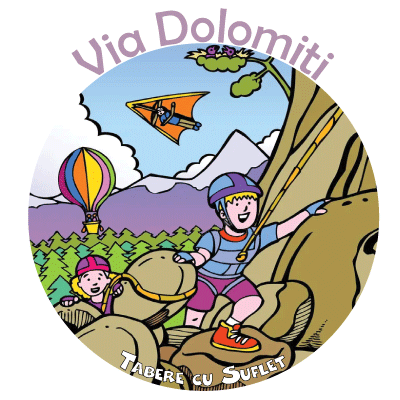

Cand mergem? 3 - 9 august 2024
Unde? La Cortina d'Ampezzo (Italia), in inima Dolomitilor, locul unde s-a nascut conceptul de Via Ferrata si unde se gasesc unele dintre cele mai impresionante si mai frumoase trasee echipate cu cabluri si scari de otel!
Mai multe detalii
Ce facem? In prima zi invatam cum sa folosim echipamentul de Via ferrata si despre masurile de siguranta de care trebuie sa tinem seama, apoi vom strabate mai multe trasee celebre din Dolomiti, construite de austrieci si italieni in timpul Razboiului Mondial.
Vom incepe cu o Via Ferrata mai usoara, de grad B, pentru acomodare,
apoi vom trece, pe rand, la trasee mai dificile, functie de nivelul participantilor.
Dupa-amiaza ne vom plimba prin Cortina d'Ampezzo - statiune princiara numita si "Perla Dolomitilor" - vom face scurte drumetii si vom participa la diferite jocuri.
Poze din Tabara
Trasee: Iata cateva variante de trasee de Via Ferrata pe care le parcurgem:
• Via Ferrata Cascadele Fanes (Sentiero dei Canyons e delle Cascate - gr B)
• Via Ferrata Ivano Dibona (gr B) - poze de pe traseu
• Via Ferrata Grota di Tofana (gr B) - poze de pe traseu
• Via Ferrata Formenton (gr B / C)
• Via Ferrata Strobel (gr C)
• Via Ferrata Col Rosa (gr C)
• Via Ferrata Ra Bujela (gr C)
• Via Ferrata Cristallo (gr C / D) - poze de pe traseu
• Via Ferrata Punta Anna (gr C / D) - poze de pe traseu
• Via Ferrata Giovanni Lipella (gr C / D) - poze de pe traseu
(*) Traseele de Via Ferrata sunt cotate functie de gradul de dificultate intre: gradul A (usor) si gradul G (extrem)
Varsta necesara 10 - 16 ani.
Cat costa? Contributia pentru aceasta tabara este de 1100 Eur
Cum rezerv? Rezervarea devine ferma dupa plata unui avans de 50%.
Termenul pentru plata avansului cu 90 de zile inainte de inceperea taberei, iar plata se poate face in RON, in Contul Asociatiei. Dupa ce faceti plata, va rugam sa ne confirmati printr-un simplu email.
In cazul in care se depaseste termenul de plata, pretul poate sa creasca.
Oferte: Pentru plata unui avans cu 120 de zile inainte de inceperea taberei se ofera o reducere de 10% prin programul Early Booking. Mai multe detalii
Ce asiguram? Transport cu microbuzul, 2 nopti cazare la pensiune 3* pe drum, 4 nopti cazare in camping la Cortina d'Ampezzo, 3 mese, ghid atestat de Federatia Austriaca de Alpinism (ÖAV), echipament Via Ferrata, supraveghere copii si, nu in ultimul rand, o experienta de neuitat:)
Asociatia Tabere cu Suflet: Aceasta tabara este deschisa exclusiv pentru membrii Asociatiei Tabere cu Suflet.
Daca nu sunteti membru si doriti sa deveniti, va rugam sa consultati Conditiile de Aderare, apoi sa completati Formularul de Inscriere si sa semnati Cererea de Adeziune.